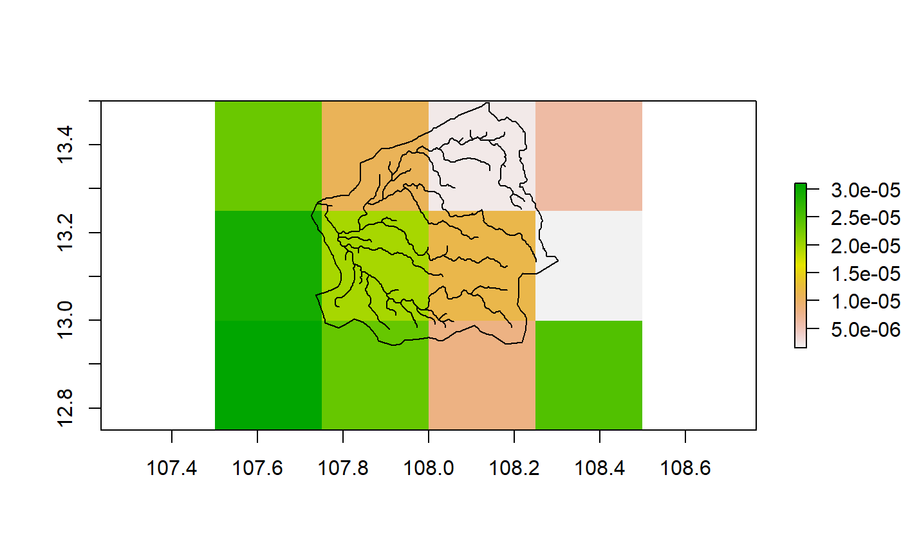
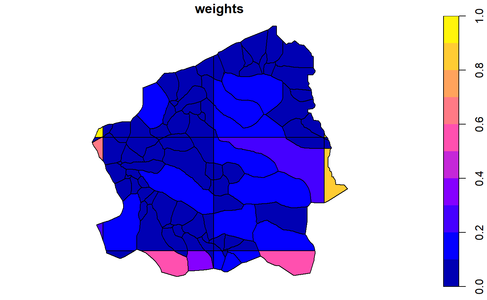
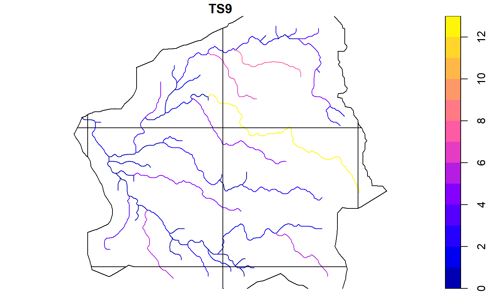

hydrostreamer tutorial
Marko Kallio
2018-06-12
Source:vignettes/hydrostreamer.Rmd
hydrostreamer.RmdThe development of ‘hydrostreamer’ was inspired by my last study, where one component was estimating water availability in rural villages. In that study, we estimated it using a regional distributed hydrological model with 5km grid size, but I was unhappy with how it actually represented water quantities in the villages. First, the grid size was too large to represent the stream network accurately. Second, because the stream network was not usable, the results could only be taken as a continuous field. However, a continuous field of surface water hardly describes the tendency of water to flow in streams.
Hence, hydrostreamer was conceived. hydrostreamer takes an off-the-shelf runoff product of an arbitrary resolution, and assigns runoff to an explicitly represented river network. To keep things simple and approachable, there is no modelling involved in the use of hydrostreamer, rather, we post-process results from either hydrological or land sufrace models.
The concept of hydrostreamer is very simple and easy to grasp, and in fact it is nothing new. There are many solutions which use similar ideas (for instance HydroROUT, RAPID or mizuRoute). These also take off-the-shelf runoff products, and apply river routing algorithms to predict streamflow at explicit river segments. These solutions, however, may be difficult to use due to the technical skills required to install and use them, or they may be developed for licenced software. hydrostreamer’s focus is also not in river routing, but in the downscaling step.
Using hydrostreamer
Fictional example data is provided with the package for tutorial purposes. It contains a river network with 71 river segments, and runoff timeseries as GeoTIFF (12 layers; one for each month of the year). These are the minimum requirements, but I strongly suggest adding also an area of interest.
library(sf)
#> Linking to GEOS 3.6.1, GDAL 2.2.3, proj.4 4.9.3
library(raster)
#> Loading required package: sp
library(hydrostreamer)
data(river)
data(basin)
runoff <- brick(system.file("extdata", "runoff.tif", package = "hydrostreamer"))plot(runoff[[1]])
plot(st_geometry(river), add=TRUE)
plot(st_geometry(basin), add=TRUE)
hydrostreamer workflow occurs in four steps (and four functions):
- Convert the raster timeseries to a polygon grid
- Compute weights for each river segments
- Compute segment specific runoff
- Apply river routing
1. Converting raster to a polygon grid
The raster layers are converted to polygons in order to do all the computations using only vector processing. each cell of the raster is polygonized, and if an area of interest is provided, the polygons are cropped to it. This removes any unneeded grid cells. The resulting ‘HSgrid’ object has an ID and surface area columns in addition to each timestep as their own columns.
grid <- polygrid_timeseries(runoff, aoi=basin)
names(grid)
#> [1] "gridID" "area_m2" "runoff.1" "runoff.2" "runoff.3"
#> [6] "runoff.4" "runoff.5" "runoff.6" "runoff.7" "runoff.8"
#> [11] "runoff.9" "runoff.10" "runoff.11" "runoff.12" "geometry"
plot(grid[,"area_m2"])
2. Compute weight for each river segment using segment catchments
Once the raster has been polygonized, we can compute the weights. The function provides a possibility to weight the segments by their respective drainage area, or by using segment properties. If the catchment areas for each specific river segment are known, they can be provided. If not, hydrostreamer can estimate catchment areas using medial axis delineation (segment specific Voronoi polygons). Alternatively, if the river network is derived from a DEM, providing drainage direction raster allows hydrostreamer to delineate basins according to it.
Here, our river network is not a product of a DEM, so we’ll use medial axis delineation. The area of interest is important here as it is used to clip the voronoi polygons.
voronoi <- river_voronoi(river, aoi=basin, riverID = "ID")plot(voronoi[,"riverID"], reset=FALSE)
plot(st_geometry(river), add=TRUE)
Each river segment now has a specific drainage area associated with it, and these can be used to weight. The voronoi creating step can be incorporated in the basin weighting step. here the third argument “area” tells the function that we’re using area-based weighting.
v.weights <- compute_weights(river, grid, "area", aoi=basin, riverID = "ID")If the basins were already calculated, we could also skip the extra delineation step by providing the basin areas.
v.weights <- compute_weights(river, grid, "area", aoi=basin, basins = voronoi, riverID = "ID")The output (‘HSragrid’) is a list of 3 objects:
- a routed river network (created using flow_network)
- weighted basins (in this case, weighted Voronoi diagram)
- ‘HSgrid’ object created earlier
plot(v.weights[[2]][,"weights"])
2. Compute weight for each river segment using segment linestrings
If the river network is very large, creating the catchment areas may take considerable amount of time. Alternative is to simply use the river segments and their properties for weighting. There are some important things to consider here. Runoff is allocated to the river segments only where they intersect the grid cells. In our example, this means that grid ID 4 on the left edge of the area of interest is not considered, because no river line crosses to that grid cell (see below).
plot(grid[,"gridID"], reset=FALSE)
plot(st_geometry(river), add=TRUE)
Currently, hydrostreamer offers four ways to weight the segments:
- equal weights (equally divide the grid cell value to all segments within)
- Strahler stream order
- Segment length
- User provided numeric vector
l.weights <- compute_weights(river, grid, "length", aoi=basin, riverID = "ID")The function works a little bit different with segment-based weighting. The river network is first split at grid cell boundaries (using function split_river_with_grid). The segments are then routed with flow_network, and finally weighted based on the property defined. The output (‘HSrgrid’) is a list of 2 objects:
- a split and routed river network
- ‘HSgrid’ object created earlier
3. Compute segment spefic runoff
After weighting, we can apply the actual downscaling.
v.runoff <- compute_segment_runoff(v.weights)
l.runoff <- compute_segment_runoff(l.weights)The output is the river network with additional runoff columns for each timestep (in our case, one for each month of the year).
v.runoff
#> Simple feature collection with 71 features and 16 fields
#> geometry type: LINESTRING
#> dimension: XY
#> bbox: xmin: 107.7396 ymin: 12.97917 xmax: 108.2521 ymax: 13.43333
#> epsg (SRID): 4326
#> proj4string: +proj=longlat +datum=WGS84 +no_defs
#> First 10 features:
#> riverID PREVIOUS NEXT DOWNSTREAM
#> 1 1 -9999 3 3, 7, 8, 9, 14, 15, 21, 25, 30, 33, 32, 26
#> 2 2 -9999 7 7, 8, 9, 14, 15, 21, 25, 30, 33, 32, 26
#> 3 3 1, 4 7 7, 8, 9, 14, 15, 21, 25, 30, 33, 32, 26
#> 4 4 5, 10 3 3, 7, 8, 9, 14, 15, 21, 25, 30, 33, 32, 26
#> 5 5 -9999 4 4, 3, 7, 8, 9, 14, 15, 21, 25, 30, 33, 32, 26
#> 6 6 -9999 8 8, 9, 14, 15, 21, 25, 30, 33, 32, 26
#> 7 7 2, 3 8 8, 9, 14, 15, 21, 25, 30, 33, 32, 26
#> 8 8 6, 7 9 9, 14, 15, 21, 25, 30, 33, 32, 26
#> 9 9 8, 12 14 14, 15, 21, 25, 30, 33, 32, 26
#> 10 10 11, 20 4 4, 3, 7, 8, 9, 14, 15, 21, 25, 30, 33, 32, 26
#> TS1 TS2 TS3 TS4 TS5 TS6
#> 1 0.05742213 0.009133529 0.007181127 0.016599013 0.17076607 0.43034150
#> 2 0.06418934 0.010209916 0.008027424 0.018555208 0.19089086 0.48105727
#> 3 0.01123945 0.001787741 0.001405590 0.003248989 0.03342470 0.08423239
#> 4 0.01434150 0.002281151 0.001793527 0.004145697 0.04264979 0.10748022
#> 5 0.08858261 0.014089896 0.011078011 0.025606570 0.26343333 0.66386898
#> 6 0.01466616 0.002332790 0.001834128 0.004239545 0.04361527 0.10991330
#> 7 0.02801368 0.004455839 0.003503350 0.008097914 0.08330911 0.20994432
#> 8 0.07473950 0.011888020 0.009346812 0.021604944 0.22226571 0.56012392
#> 9 0.19700751 0.066808547 0.049854856 0.107526692 0.32405957 0.63189319
#> 10 0.08964928 0.014259559 0.011211407 0.025914911 0.26660546 0.67186295
#> TS7 TS8 TS9 TS10 TS11 TS12
#> 1 0.8560678 1.7738297 2.2708805 2.1261018 1.2260397 0.43533529
#> 2 0.9569554 1.9828757 2.5385039 2.3766630 1.3705285 0.48663958
#> 3 0.1675614 0.3471985 0.4444882 0.4161501 0.2399775 0.08520985
#> 4 0.2138078 0.4430240 0.5671652 0.5310059 0.3062103 0.10872745
#> 5 1.3206183 2.7364094 3.5031879 3.2798441 1.8913577 0.67157269
#> 6 0.2186478 0.4530529 0.5800044 0.5430265 0.3131421 0.11118876
#> 7 0.4176371 0.8653720 1.1078608 1.0372297 0.5981298 0.21238057
#> 8 1.1142408 2.3087814 2.9557328 2.7672917 1.5957888 0.56662374
#> 9 1.0059348 1.7084506 2.1471681 2.0682293 1.3455960 0.64266678
#> 10 1.3365205 2.7693598 3.5453715 3.3193383 1.9141325 0.67965942
#> geom
#> 1 LINESTRING (108.1354 13.429...
#> 2 LINESTRING (108.0979 13.433...
#> 3 LINESTRING (108.1187 13.414...
#> 4 LINESTRING (108.1396 13.410...
#> 5 LINESTRING (108.1771 13.429...
#> 6 LINESTRING (108.0792 13.416...
#> 7 LINESTRING (108.1021 13.410...
#> 8 LINESTRING (108.0687 13.406...
#> 9 LINESTRING (108.0229 13.389...
#> 10 LINESTRING (108.1729 13.356...plot(v.runoff[,"TS9"], reset=FALSE)
plot(st_geometry(st_cast(grid, "LINESTRING")), add=TRUE)
plot(l.runoff[,"TS9"], reset=FALSE)
plot(st_geometry(st_cast(grid, "LINESTRING")), add=TRUE)
Some differences between the two approaches can be seen here: the long segment in the middle of the basin is split into shorter segments, when segment-based weighting is included. In catchment based weighting this is not automatically done (nothing stops the user from splitting the river network prior to creating the basins).
4. Apply river routing
The last step is to accumulate flow downstream. The previous step only assigned the grid cell value to the streams. This may be usable in itself, e.g. if we were interested whether the water use in a specific segment is self-sufficient, or is dependent on flow from upstream. However, often we want to know the accumulated discharge at certain points of the river.
hydrostreamer currently (June 2018) only implements the simplest possible river routing by adding all runoff to every segment downstream, at each timestep. This is an overly simple scheme, and there are plans to add more sophisticated river routing algorithms to the package.
v.flow <- accumulate_flow(v.runoff)
l.flow <- accumulate_flow(l.runoff)plot(v.flow[,"TS9"])
plot(l.flow[,"TS9"])
Conclusion
hydrostreamer provides simple tools to downscale off-the-shelf runoff products without performing additional modelling. The package is under rapid development. Some planned upcoming features in future releases include:
- Add Muskingum river routing scheme
- Analysis and plotting functions supporting observation data
- Optimising an ensemble of several runoff products based on observed flow